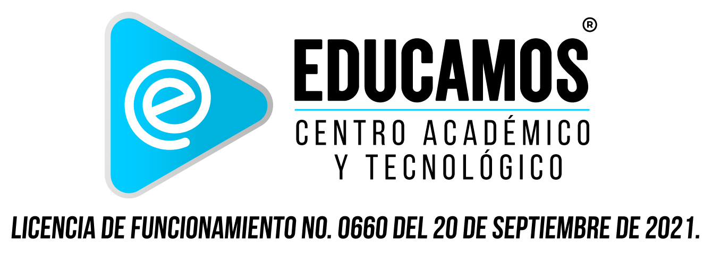

Estudio de marca y oportunidad digitalColegio Educamos como plataforma de colegio virtual
Diagnóstico de marca, propuesta de reposicionamiento y oportunidades de experiencia digital para evolucionar la presencia actual de Educamos Online hacia un ecosistema de admisiones, vida académica y seguimiento estudiantil más claro, confiable y escalable.
La oferta existe, pero hoy compite más como catálogo de servicios que como colegio virtual confiable
Lo que sí está funcionando
- Promesa concreta de educación virtual con profesores en vivo.
- Oferta visible para jóvenes y adultos con rutas flexibles de estudio.
- Proceso comercial activo con WhatsApp, formularios y call center.
Lo que genera fricción
- Navegación saturada con varias líneas de negocio compitiendo entre sí.
- Jerarquía visual antigua y poco enfocada en confianza institucional.
- Poca visibilidad del seguimiento académico, calendario y vida estudiantil.
Oportunidad
- Convertir la propuesta en una experiencia de colegio virtual integral.
- Separar admisiones, estudio y soporte en rutas fáciles de entender.
- Posicionar a Educamos como alternativa moderna y acompañada.
Lectura de identidad actual
Territorio verbal actual
- Educación con tecnología al alcance de todos.
- Bachillerato por ciclos, acelerado, tutorías y cursos rápidos.
- Acompañamiento comercial directo y tono cercano.
Percepción que proyecta hoy
- Marca accesible y resolutiva.
- Institución flexible para personas que necesitan terminar estudios rápido.
- Estructura híbrida entre academia, LMS, cursos y tienda.
Claridad de propuesta
Credibilidad institucional
Capacidad de conversión
Experiencia digital
Elementos de marca identificados
Lectura del logo
El isotipo triangular con la “e” interna funciona bien para un entorno digital: comunica play, avance, contenido y tecnología. Es un activo valioso que conviene conservar y modernizar en aplicaciones web.
Lenguaje visual recomendado
Mantener el azul turquesa como color firma, reforzar un azul noche institucional para confianza, limpiar el layout y pasar de una estética de portal antiguo a una interfaz más académica, humana y guiada.
Turquesa digital
#19B5E6
Azul institucional
#0E2238
Acento de acción
#F4B942
Servicios actuales que deben ordenarse por rutas de usuario
Ruta 1. Quiero estudiar
- Primaria y bachillerato virtual.
- Bachillerato por ciclos.
- Bachillerato acelerado.
Ruta 2. Quiero reforzar
- Tutorías académicas.
- Sesiones psicológicas o acompañamiento complementario.
- Clases en vivo con grabaciones.
Ruta 3. Quiero certificarme
- Cursos rápidos certificados.
- Oferta corporativa o institucional.
- Desarrollo de plataformas e-learning a medida.
Fricciones que hoy le restan valor al colegio virtual
1. Exceso de opciones en el primer contacto
El usuario llega y encuentra menú, sliders, tienda, cursos, blog, convenios y servicios sin una prioridad clara. Eso eleva la carga cognitiva y dificulta convertir visitas en inscripciones.
2. Poca visualización del proceso académico
La web explica cómo inscribirse, pero casi no muestra cómo se vive el estudio luego del pago: horarios, tareas, progreso, reportes, clases grabadas, soporte o panel del estudiante.
3. Imagen más promocional que institucional
El tono comercial funciona para captar, pero un colegio virtual necesita también transmitir orden, metodología, acompañamiento, seguridad y estructura académica.
4. Fragmentación de dominios y plataformas
La convivencia entre dominios, formularios y herramientas externas puede romper continuidad visual y generar dudas en usuarios que necesitan una ruta simple y confiable.
Reposicionar como “Colegio Educamos” con una promesa más simple
Pilar 1. Confianza
- Mostrar metodología, cronograma, docentes y rutas de estudio.
- Elevar el tono institucional sin perder cercanía.
- Presentar testimonios y resultados con más estructura.
Pilar 2. Facilidad
- Unificar preinscripción, pagos y activación de acceso.
- Reducir el proceso de ingreso a pocos pasos visibles.
- Agregar orientación por perfil: estudiante, acudiente o empresa.
Pilar 3. Acompañamiento
- Dashboard con asistencia, progreso y tareas.
- Alertas de clases en vivo y grabadas.
- Canales de soporte visibles para estudiantes y familias.
Capas funcionales prioritarias
Front comercial
- Landing principal con segmentación clara de la oferta.
- Formulario de preinscripción conectado a admisiones.
- Página de programas con requisitos, duración y modalidad.
- WhatsApp y call center como apoyo, no como única ruta.
Portal académico
- Inicio de estudiante con agenda del día y estado académico.
- Clases en vivo, grabaciones y tareas pendientes.
- Módulo de notas, asistencia y avance por módulo o ciclo.
- Vista de acudiente con reportes y alertas.